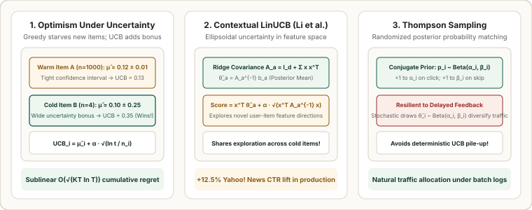

Search, Ranking & Retrieval · Cold-Start Problems · Chapter 2
2. Explore–Exploit for Cold-Start: Upper Confidence Bound (LinUCB) & Thompson Sampling
Even with a metadata hybrid tower, a newly uploaded item starts with high epistemic uncertainty about its true appeal. If a ranker greedily sorts by point estimates $\hat{\mu}_i$, a new item that happens to miss on its first $2$ impressions ($\hat{\mu}_i = 0$) is permanently buried—a failure mode called premature exploitation. Solving cold-start requires actively allocating traffic to uncertain items to gather information. This chapter derives UCB1, Contextual LinUCB (Li et al., 2010), and Thompson Sampling.

1. The Greedy Starvation Trap & UCB1 (Optimism in the Face of Uncertainty)
Suppose Arm $A$ is a warm incumbent item with true CTR $\mu_A = 0.12$ estimated over $n_A = 1{,}000$ impressions, and Arm $B$ is a brand-new item with true CTR $\mu_B = 0.20$. If Arm $B$ goes unclicked on its first $3$ impressions ($\hat{\mu}_B = 0/3 = 0.00$), a greedy policy ($\arg\max_i \hat{\mu}_i$) never shows Arm $B$ again, incurring linear cumulative regret $\Omega(T)$.
Upper Confidence Bound (UCB1) (Auer et al., 2002) applies the principle of optimism in the face of uncertainty: score every item by its empirical mean plus a Hoeffding confidence-interval bonus that shrinks as $1/\sqrt{n_i}$:
$$\text{UCB}_i(t) = \underbrace{\hat{\mu}_i(t)}_{\text{Exploitation (Empirical Mean)}} + \underbrace{\alpha \sqrt{\frac{\ln t}{n_i(t)}}}_{\text{Exploration (Uncertainty Bonus)}}$$When $n_i(t)$ is small, the uncertainty bonus $\alpha \sqrt{\frac{\ln t}{n_i(t)}}$ is large, boosting cold items into top slots until enough impressions $n_i$ are collected to either confirm high CTR ($\hat{\mu}_i$ stays high) or shrink the bonus and retire the item.
2. Contextual Bandits: Disjoint & Hybrid LinUCB
Context-free UCB1 treats each user identically and requires $O(K)$ pulls across $K$ items. In personalized news, video, or e-commerce recommendation, we observe a $d$-dimensional user–item context vector $\mathbf{x}_{t,a} \in \mathbb{R}^d$ before choosing arm $a$.
LinUCB (Li et al., WWW 2010 — deployed at Yahoo! Front Page Today Module for a $+12.5\%$ click lift) models the expected reward of arm $a$ as linear in $\mathbf{x}_{t,a}$: $\mathbb{E}[r_{t,a} \mid \mathbf{x}_{t,a}] = \mathbf{x}_{t,a}^\top \boldsymbol{\theta}_a^*$. Using online ridge regression with design covariance matrix $A_a \in \mathbb{R}^{d \times d}$ and reward-weighted feature sum $\mathbf{b}_a \in \mathbb{R}^d$:
$$A_a = I_d + \sum_{\tau \in \mathcal{T}_a} \mathbf{x}_{\tau,a}\mathbf{x}_{\tau,a}^\top, \qquad \mathbf{b}_a = \sum_{\tau \in \mathcal{T}_a} r_{\tau,a}\mathbf{x}_{\tau,a}, \qquad \hat{\boldsymbol{\theta}}_a = A_a^{-1}\mathbf{b}_a$$The posterior standard deviation of the predicted reward $\mathbf{x}_{t,a}^\top \hat{\boldsymbol{\theta}}_a$ along feature direction $\mathbf{x}_{t,a}$ is exactly $\sqrt{\mathbf{x}_{t,a}^\top A_a^{-1} \mathbf{x}_{t,a}}$. LinUCB selects the arm maximizing:
$$a_t = \arg\max_{a \in \mathcal{A}_t} \left( \underbrace{\mathbf{x}_{t,a}^\top \hat{\boldsymbol{\theta}}_a}_{\text{Expected CTR}} + \underbrace{\alpha \sqrt{\mathbf{x}_{t,a}^\top A_a^{-1} \mathbf{x}_{t,a}}}_{\text{Ellipsoidal Uncertainty in Direction }\mathbf{x}_{t,a}} \right)$$Notice the geometric beauty: even if arm $a$ has been shown $100$ times to desktop users, if a mobile user arrives with a feature direction $\mathbf{x}_{t,a}$ orthogonal to previous impressions, $\sqrt{\mathbf{x}_{t,a}^\top A_a^{-1} \mathbf{x}_{t,a}}$ remains large, triggering targeted exploration for that new user segment!
3. Thompson Sampling & Why It Beats UCB Under Delayed Feedback
Notice that UCB1 and LinUCB are deterministic: if feature logs and model updates are batched every $10$ minutes ($100{,}000$ requests), a deterministic UCB rule will pick the exact same cold item on all $100{,}000$ requests before $A_a$ updates—starving every other cold item!
Thompson Sampling solves this via randomized probability matching: maintain a Bayesian posterior over each item's CTR (e.g., $\text{Beta}(\alpha_i, \beta_i)$ where $\alpha_i = \alpha_0 + \text{clicks}_i$ and $\beta_i = \beta_0 + \text{skips}_i$), draw an independent random sample $\tilde{\theta}_i \sim \text{Beta}(\alpha_i, \beta_i)$ per request, and rank by $\tilde{\theta}_i$. Because each request draws an independent random sample, traffic is naturally spread across plausible cold items proportional to the probability that each is optimal—even during a $10$-minute feedback delay!
4. Worked Numerical Example: Greedy vs. LinUCB ($\alpha = 0.5$)
Let context vector be $\mathbf{x} = [1.0, 0.0]^\top \in \mathbb{R}^2$ and exploration coefficient $\alpha = 0.5$. Compare three candidate items:
| Candidate Item | Covariance $A_a^{-1}$ along $\mathbf{x}$ | Point Estimate $\mathbf{x}^\top \hat{\boldsymbol{\theta}}_a$ | Uncertainty $\alpha \sqrt{\mathbf{x}^\top A_a^{-1} \mathbf{x}}$ | Greedy Score | LinUCB Score |
|---|---|---|---|---|---|
| Item 1 (Warm Incumbent, $n=99$) | $\mathbf{x}^\top A_1^{-1} \mathbf{x} = 0.01$ | $0.150$ | $0.5 \sqrt{0.01} = 0.050$ | $0.150$ (#1) | $0.150 + 0.050 = 0.200$ (#2) |
| Item 2 (Cold Item, $n=0$, $A_2 = I_2$) | $\mathbf{x}^\top A_2^{-1} \mathbf{x} = 1.00$ | $0.000$ | $0.5 \sqrt{1.00} = 0.500$ | $0.000$ (Starved!) | $0.000 + 0.500 = \mathbf{0.500}$ (#1 Explored!) |
| Item 3 (Tested & Poor, $n=24$) | $\mathbf{x}^\top A_3^{-1} \mathbf{x} = 0.04$ | $0.040$ | $0.5 \sqrt{0.04} = 0.100$ | $0.040$ (#2) | $0.040 + 0.100 = 0.140$ (#3 Pruned) |
5. Runnable Python Implementation: LinUCB & Beta Thompson Sampling
import numpy as np
class DisjointLinUCB:
def __init__(self, num_arms: int, dim: int, alpha: float = 0.5):
self.alpha = alpha
self.A = [np.eye(dim) for _ in range(num_arms)]
self.b = [np.zeros(dim) for _ in range(num_arms)]
def select_arm(self, x_contexts: list[np.ndarray]) -> tuple[int, np.ndarray]:
scores = np.zeros(len(x_contexts))
for a, x in enumerate(x_contexts):
A_inv = np.linalg.inv(self.A[a])
theta_hat = A_inv @ self.b[a]
mean = float(x @ theta_hat)
bonus = self.alpha * np.sqrt(float(x @ A_inv @ x))
scores[a] = mean + bonus
return int(np.argmax(scores)), scores
def update(self, arm: int, x: np.ndarray, reward: float) -> None:
self.A[arm] += np.outer(x, x)
self.b[arm] += reward * x
if __name__ == "__main__":
bandit = DisjointLinUCB(num_arms=3, dim=2, alpha=0.5)
x = np.array([1.0, 0.0])
# Warm up Arm 0 (99 pulls, 15 clicks) and Arm 2 (24 pulls, 1 click); Arm 1 is cold (0 pulls)
for i in range(99):
bandit.update(0, x, 1.0 if i < 15 else 0.0)
for i in range(24):
bandit.update(2, x, 1.0 if i < 1 else 0.0)
chosen, ucb_scores = bandit.select_arm([x, x, x])
print("LinUCB Scores [Warm, Cold, Poor]:", np.round(ucb_scores, 3))
print("Selected Arm (1 = Cold Item Explored!):", chosen)